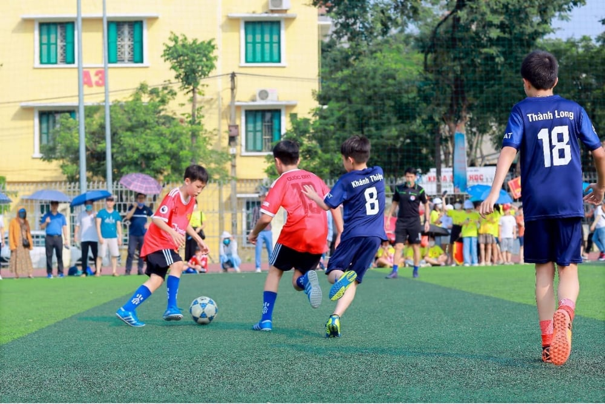
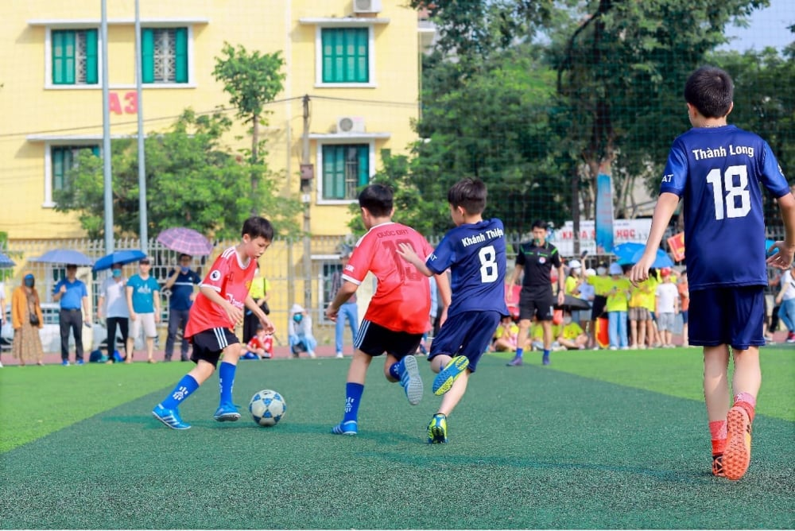
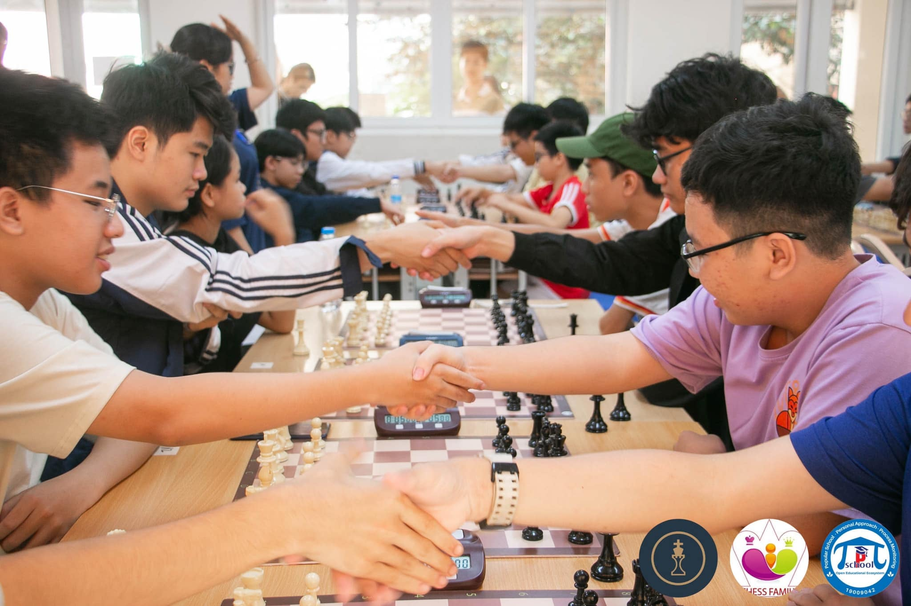
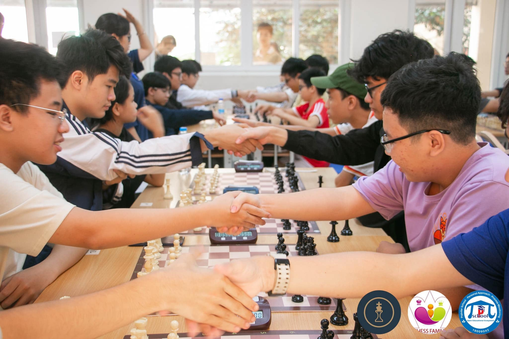

Chu Van An Football Club
Chu Van An Football Club (CFC) là đội bóng phong trào của học sinh và cựu học sinh Trường THPT Chu Văn An, được thành lập nhằm tạo sân chơi thể thao lành mạnh và gắn kết cộng đồng. Từ những ngày đầu với số lượng thành viên ít ỏi, CFC nhanh chóng phát triển thành một tập thể giàu nhiệt huyết, duy trì tập luyện thường xuyên và tham gia nhiều giải đấu học sinh – sinh viên cũng như các giải phong trào địa phương. Đội đã đạt được nhiều kết quả ấn tượng như lọt vào vòng sâu các giải truyền thống và giành nhiều chiến thắng giao hữu. Với tinh thần “Chơi đẹp – Đoàn kết – Nỗ lực”, CFC luôn hướng tới xây dựng một cộng đồng bóng đá văn minh và bền vững
Chu Van An Basketball Team
Chu Van An Basketball Team (CVABT) được hình thành từ một nhóm học sinh yêu bóng rổ và nhanh chóng phát triển thành đội bóng có quy củ với lịch tập luyện ổn định. Trong hành trình hoạt động, đội tập trung xây dựng lối chơi tốc độ – kỷ luật, đồng thời tạo môi trường rèn luyện cho cả thành viên mới và cựu thành viên quay lại giao lưu. CVABT đã đạt được nhiều dấu mốc đáng nhớ như: Vô địch Giải Bóng Rổ Truyền Thống Chu Văn An 2023, Hạng Ba Giải HSSV Quận Tây Hồ 2024, và chuỗi 7 trận thắng giao hữu liên tiếp trước các đội trường bạn trong năm 2025. Ngoài thi đấu, đội còn tổ chức tuyển chọn thường niên, hoạt động workshop kỹ thuật và các buổi giao hữu mở rộng nhằm kết nối cộng đồng bóng rổ Chu Văn An. Với tinh thần tiến bộ và sự gắn kết mạnh mẽ, CVABT tiếp tục hướng tới những giải đấu lớn hơn trong tương lai.
 

CVA Kings and Queens
CVA Kings and Queens là một câu lạc bộ dành cho những bạn yêu thích bộ môn Cờ vua và Cờ tướng tại trường THPT Chuyên Hà Nội – Amsterdam . Được thành lập từ năm 2021, CLB nhanh chóng trở thành điểm đến của những học sinh đam mê tư duy chiến lược, mong muốn rèn luyện kỹ năng và giao lưu trong một cộng đồng năng động, thân thiện. Trong suốt quá trình hoạt động, Kings and Queens đã ghi dấu bằng nhiều thành tích nổi bật. CLB đã tổ chức thành công ba mùa giải Exchess từ năm 2022 và đảm nhận vai trò chủ trì, điều hành giải đấu CET. Đặc biệt, các thành viên của CLB đã xuất sắc mang về tổng cộng 10 huy chương ở tất cả các nội dung trong Hội khỏe Phù Đổng Thành phố Hà Nội năm 2024 – minh chứng rõ rệt cho tinh thần luyện tập nghiêm túc và bản lĩnh thi đấu. Không chỉ chú trọng chuyên môn, Kings and Queens còn xây dựng một môi trường sinh hoạt giàu màu sắc với nhiều hoạt động gắn kết như tổng kết năm học, Sparkling Night 2024 hay chương trình tri ân. Với slogan dí dỏm “Em có thấy mình thiếu J không? Không ạ, vì em có K A Q rồi!”, CLB mang đến hình ảnh trẻ trung, đầy nhiệt huyết và sáng tạo. Kings and Queens – nơi những người yêu cờ cùng nhau tỏa sáng.